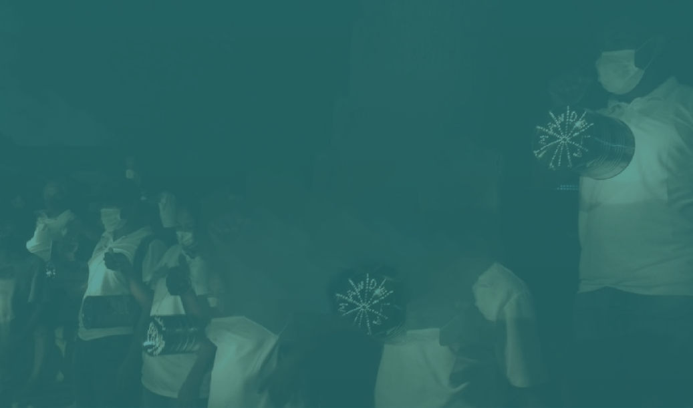

Según el Centro Nacional de Memoria Histórica, “el 99 por ciento de los municipios colombianos han sido expulsores. A la luz de las cifras precedentes, no es excesivo caracterizar a Colombia como una Nación desplazada”
Desplazamiento Forzado
Este especial digital busca sensibilizar sobre la definición y condiciones del Desplazamiento Forzado de la mano del artista Dayro Carrasquilla. En este especial veremos las dinámicas sociales de victimización y revictimización de la población desplazada, especialmente la del barrio Nelson Mandela en la periferia de Cartagena.
Definición
”Es desplazado toda persona que se ha visto forzada a migrar dentro del territorio nacional abandonando su localidad de residencia o actividades económicas habituales, porque su vida, su integridad física, su seguridad o libertad personales han sido vulneradas o se encuentran directamente amenazadas con ocasión de las violaciones graves y manifiestas a las normas internacionales de derechos humanos, ocurridas con ocasión del conflicto armado interno” [Ley 1448 de 2011]
ObraFragmentos
Tinta sobre piel, acción performática, fotografía digital
Esta obra del artista Dayro Carrasquilla, es como una
colcha de retazos de memorias. Se encuentra compuesta
por una serie de escritos, que a manera de
intervenciones sobre la pieles evidencia las historias
de victimización y proyectos de vida de las víctimas
del conflicto armado que habitan el barrio Nelson
Mandela
 Haz clic para ver la obra
Haz clic para ver la obra
Línea del Tiempo
Elaborada a partir de las investigaciones del CNMH: Una nación desplazada, Informe nacional del desplazamiento forzado en Colombia, Bogotá, CNMH, 2015
Haz click en cualquier elemento de la fotografíaEscalamiento del Conflicto
El agravamiento del Conflicto
El gran éxodo
Desplazamiento en medio de los acuerdos de paz

Colombia
Departamento
de Bolívar
Municipio de
Cartagena
de Indias
Barrio
Nelson Mandela


ObraEntre Dientes
Acción performática, fotografía digital
Palabras productos de la jerga popular costeña, relacionadas con el hecho de denunciar cualquier acto deshumanizante que atropelle la integridad de cada individuo o a la población del barrio Nelsón Mandela. Esta obra la componen 21 piezas fotográficas en acrílico con dimensiones de 27 x40, instaladas sobre vinilo adhesivo con imagen de baldosines dorados adherido a la pared
Haz clic para
ver la obra

En la década de los noventa, personas desplazadas por la violencia, provenientes de diferentes lugares de Colombia como los Montes de María, Urabá o el Pacifico chocoano, se asentaron en la periferia de la ciudad de Cartagena, zona que hoy se conoce como el barrio de Nelson Mandela.

Donde una buena parte, si no la mayoría, son mestizos, como suelen ser los habitantes de la sabana de Córdoba y Sucre (Secretaría de Planeación Distrital, 2006)*”

Los pobladores llegaron buscando nuevos comienzos, mientras se producía la oportunidad, en ocasiones, de volver a sus lugares de origen. Como muchos otros barrios en Colombia, este barrio se conformó a finales de los ochenta y principios de los noventa, en tierras baldías o fincas improductivas cuando Mandela aún era parte periferica de Cartagena. Hoy, aún hay calles sin pavimentar y viviendas construidas por sus habitantes orgánicamente, con muchas carencias. Esto, más los diversos factores de marginalidad por ausencia de servicios básicos, han causado revictimizaciones a manos de grupos armados al margen de la ley.
*Jaramillo Escobar Lukas, Arias Echavarría Cristina, Jaramillo Morales, Juan Diego, Orden en tiempos paramilitares: violencia, política y lucro en un barrio del caribe colombiano, Desafíos 23-II, 2011, p 127.

Territorio de PA – ZZZ
2008, Intervención fotografía digital
Territorio de pa-zzz es una obra que expresa la necesidad de la comunidad, de pedir por un territorio de paz. El desplazamiento de la población desde diferentes lugares del Caribe y su conformación como barrio, reproduce elementos de la violencia del conflicto armado. En el barrio Nelsón Mandela, los hechos de vulneración de DDHH en la comunidad son múltiples, incluidos nuevos desplazamiento: Restricción de la movilidad, Imposición de Reglas/Terror, Asesinatos y Masacres, Reclutamiento de Jóvenes, Daño en propiedad o bienes, extorsión.
El artista local Dayro Carrasquilla manifiesta que entre 1995 hasta el 2010 la comunidad vivió sucesos violentos. La falta del Estado de derecho permitieron que diversos grupos armados fueran los actores con poder, tomando la vida de los líderes sociales en sus manos, algunas veces para asesinarlos, otras para desplazarlos.
Haz clic para ver la obra
Anónimos
2019, Intervención fotografía digital
Serie fotográfica de postes de luz que comúnmente son utilizados para ubicar las listas amenazantes relacionadas con la llamada limpieza social. Con la intervención del color en las fotografías se buscó provocar una atmósfera turbia, haciendo alusión al contexto de miedo que se vive en las calles de Nelson Mandela. El montaje es acompañado por una pieza sonora que simula el chillido que se produce en el oído ante la aproximación del silencio absoluto y grabaciones de susurros provenientes de personas que entre confianza, son capaces de referirse a la problemática.
Haz clic aquí
para ver la Obra
Mandeleros
En el marco de la exposición multiforma del MMC “SaNaciones. Caminos de Resistencia”, el barrio Nelson Mandela, fue partícipe de una acción memorial, que buscaba congregar a una comunidad unida por el desplazamiento forzado, que intenta continuar luchar, a pesar de múltiples factores sociales victimizantes que los llevan a una y otra vez al dolor de la guerra.
Pronto
¡Lanzamiento Del Video!

Recetario Barrio Nelsón Mandela
En el marco de esta misma exposición de Sanaciones. Caminos de Resistencia, el artista Dayro Carrasquilla, junto a sabedores-sanadores del barrio Nelson Mandela, elaboró el Recetario Nélson Mandela, resiste en verde. Allí se encuentran consignados saberes ancestrales de quienes encuentran en la medicina natural, la manera de sanar. Estos conocimientos siguen existiendo en la comunidad, aún a pesar de las condiciones de desplazamiento que tuvieron que padecer y, son hoy una razón de cohesión social e identidad. Preservarlos hace parte de un camino de lucha, resistencia y reexistencia